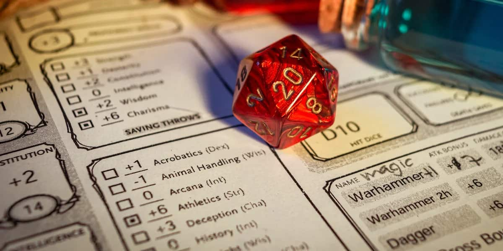

The Foundation: Tabletop & Early Consoles
The roots of the RPG genre lie in imagination, probability, and social storytelling. Before screens, there was paper, and from that paper came the core concepts that define role-playing games today.
Dungeons & Dragons (1974) 🎲
D&D established the "Holy Trinity" of RPG mechanics: attributes (Strength, Intelligence), leveling up (XP), and class-based roles. It introduced the concept of the Dungeon Master as a narrator, creating a collaborative, emergent narrative that was the first of its kind.
Defining Core Mechanics
The transition from analog to digital required translating abstract concepts into concrete systems. Three pillars emerged that would define the next two decades of RPG design:
Character Progression
The system of Experience Points (XP) ensuring the player felt tangible growth. Progression provided a clear reward loop, driving players to explore and battle.
Inventory & Economy
The concept of collecting and managing gear, items, and currency. This layered system provided depth and strategy outside of pure combat.
Statistical Combat
Replacing the physical dice roll with digital probability. Every action was tied to a character's stats, making character building crucial to success.
The 8-Bit Revolution 💾
As computers became accessible, developers translated D&D rules into code. Early console titles like Final Fantasy and Dragon Quest simplified complex math into turn-based combat systems accessible on home consoles, establishing the JRPG sub-genre.
- Turn-Based Combat: Strategic pacing allowing players to plan moves without real-time pressure, directly mirroring the tabletop experience.
- Overworld Maps: Introduced a sense of global scale and discovery, linking isolated towns and dungeons.
- Grinding: A core necessity where players repeated battles to gain the necessary power (XP) to overcome narrative walls.